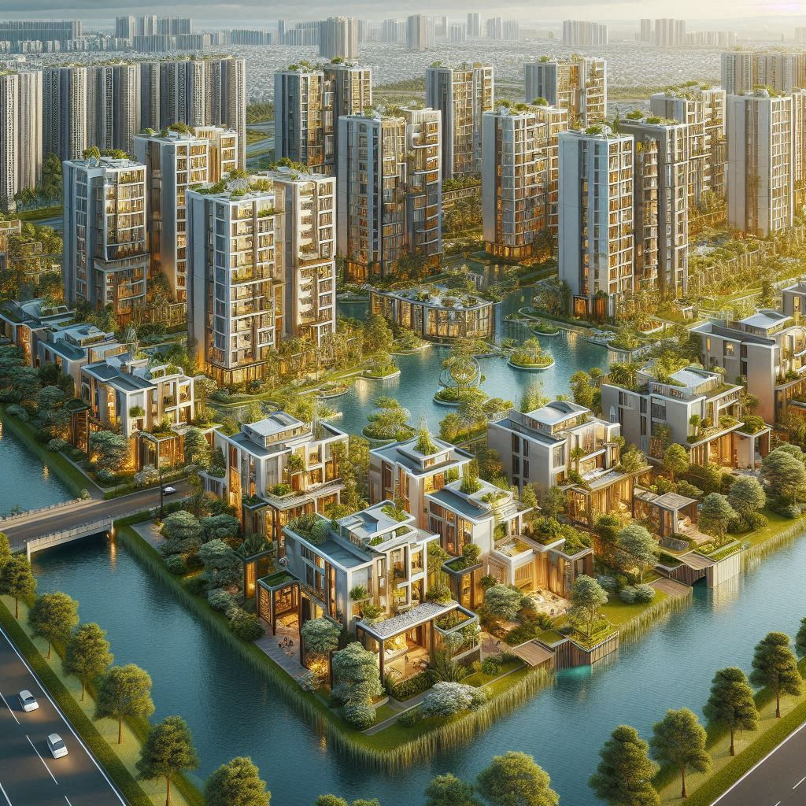
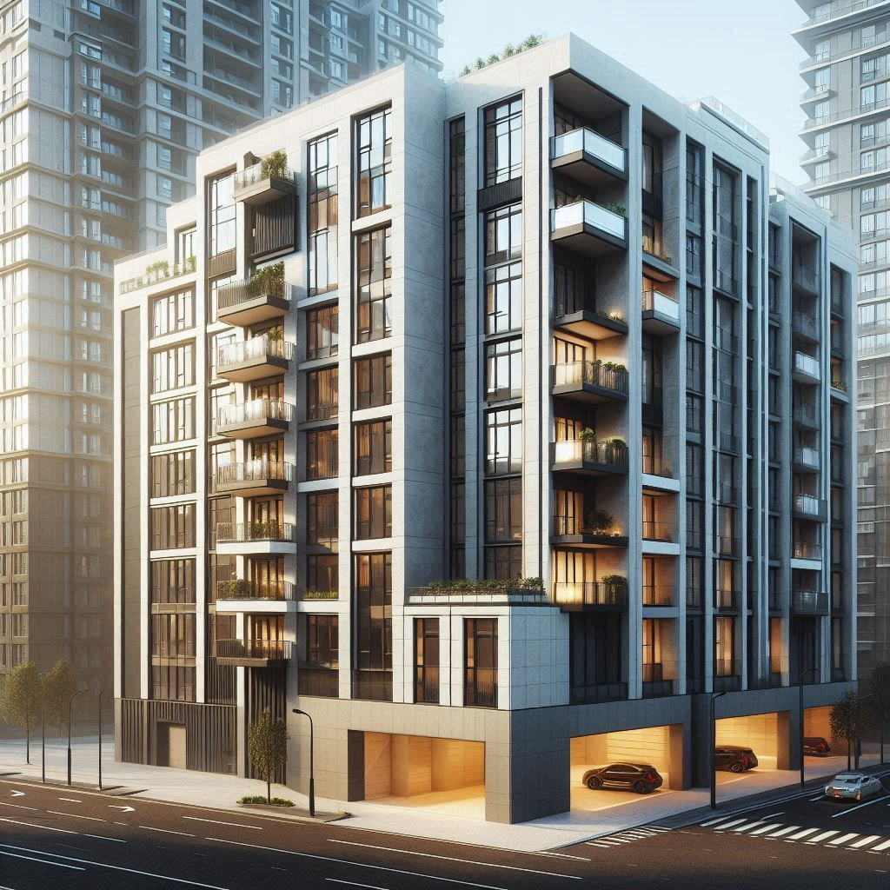

|  | |
|
 | |
| 住房類型簡介 | 透天 | 大樓 | 華廈 | 研習心得 |
生活便利：位於城市或郊區，周圍通常配備完善的生活配套設施，如超市、學校、醫院等。
適中價格：比起高層大樓和獨棟別墅，華廈的購屋成本和維護成本相對適中，是許多家庭的首選。
社區氛圍佳：擁有較多的公共空間和設施，有助於住戶之間的互動和社區活動。
安全性問題：雖然配有安全監控，但相較於透天厝和小型社區，華廈的人員進出較為複雜，安全管理難度較高。
停車問題：隨著家庭車輛數量增加，停車位可能不足，尤其是在老舊華廈中更為明顯。